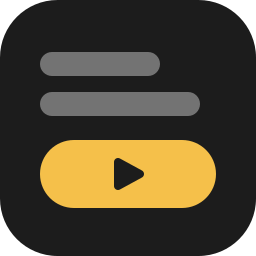

cine
Un player multimediale per eventi dal vivo.
Metti in fila video, immagini e audio, premi GO e parte il prossimo. Sul secondo schermo, quello del proiettore, esce solo quello che decidi tu.
[ beta agli inizi ]
01l'idea di base
Semplice, ma da professionisti: pensato per chi non ha mai usato un programma da regia, con la complessità nascosta finché non la cerchi.
la conferenza
Una sigla d'ingresso, i video degli ospiti, le immagini dei relatori. Ogni cosa è un cue in scaletta: premi GO quando serve e va in onda.
Dietro puoi tenere uno sfondo in loop: quando un cue finisce resta quello, mai il nero né il desktop.
l'evento
Musiche, filmati, grafiche. Tu stai al tuo schermo e vedi cosa sta andando in onda, cosa c'è dopo, e cosa succede alla fine di ogni cue.
Cambi la scaletta anche a spettacolo partito: il cue in onda non si tocca.
Un cue in onda alla volta: cine è un player, non un programma per vj. Niente livelli sovrapposti, niente audio sovrapposti.
02come si legge
Da sinistra a destra: Preview → GO → In onda. Un colore per ogni stato, in tutta l'app.
rosso: in onda
È quello che il pubblico sta guardando adesso. Sotto il monitor, grande, il tempo che manca (rosso negli ultimi 10 s).
verde: parte con GO
Il prossimo, già aperto e pronto. Il tasto GO ti dice sempre cosa fa partire.
blu: selezionato
Ci hai cliccato sopra: lo vedi in Preview e lo ascolti, senza che vada in onda. Poi decidi: «Metti come prossimo» o «Vai subito».
03due modi di usarlo
Stessi cue, stesso motore, stesso file: cambia solo la vista. Si cambia anche a show partito (⌘1, ⌘2).
- Scaletta: una lista in ordine. GO lancia il prossimo, che avanza da solo. Ideale per quello che segue un copione.
- Mattonelle: una griglia di riquadri con la miniatura. Un clic sceglie, Invio o GO lancia, i tasti 1–9 lanciano subito. Ideale per le cose da tirare fuori quando serve.
04voglio saperne di più
cosa succede alla fine di un cue
Lo decidi per ogni cue: si ferma; resta sull'ultimo fotogramma finché premi GO, oppure per un certo numero di secondi; parte il successivo; ripete (sempre o N volte) e poi fa una delle altre.
Entrare e uscire: taglio o dissolvenza, con la durata che vuoi. «Concludi» fa finire un loop il giro in corso e poi fa l'azione di fine. «Nero» (tasto B) porta tutto al nero in 1 s.
inizio e fine, adatta, riempi, stira
Nella Preview vedi tutto il file e segni dove deve cominciare e finire (I e O, come nei programmi di montaggio). Per video e immagini scegli se Adattare (con le bande), Riempire (tagliando) o Stirare.
lo show è un file
Uno show è un pacchetto .cine con dentro un file leggibile (JSON). Si apre con un doppio clic dal Finder, ⌘Z e ⇧⌘Z annullano e ripetono ogni modifica, e se un file è stato spostato lo ritrova (e se manca, il cue diventa rosso e GO non parte).
05sotto il cofano
un solo motore
Video e audio vengono letti a campioni e agganciati all'orologio della scheda audio. GO arriva sullo schermo in circa 2 refresh, sempre uguali.
l'uscita
Una finestra a tutto schermo sul secondo schermo, senza barra dei menu né Dock. Se il cavo si stacca, cine se ne accorge, e quando torna l'uscita si rimette da sola.
fotogrammi
Ogni cue dice se la sua frequenza è compatibile con lo schermo: 25p e 50p su 50 Hz vanno puliti; 29,97p o 30p scattano.
06su cosa gira (e cosa manca)
- Mac con macOS 26 o più recente. L'iPad più avanti, come telecomando.
- Solo file: video, immagini e audio. Countdown e orologi andranno in un'altra app.
- I comandi esterni (OSC, poi MIDI) non ci sono ancora. Le partenze sono sempre a mano.
- Audio del programma su una scheda a scelta, più l'ascolto della Preview su una seconda scheda.
07beta agli inizi
cine è all'inizio: la prima versione di prova (0.1) è su TestFlight solo per un gruppo ristretto. Quando la beta si aprirà, il link comparirà qui.
Intanto, se hai domande o un evento su cui provarlo: support@savut.eu.